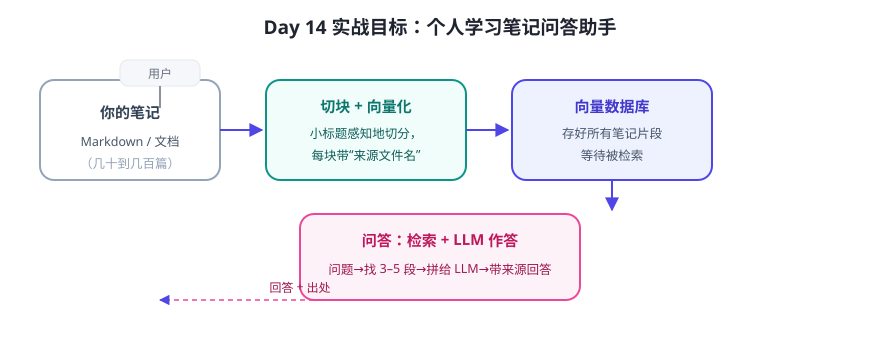

很多人的笔记“记了不看”。这个实战让笔记变“活”：上传/指向你的笔记文件夹，然后像聊天一样问“我上次总结的 Agent 四要素是什么？”它去笔记里找答案并标注出处。
系统设计

开发步骤（建议照此推进）
- 定范围：先支持 Markdown 笔记；目标问题类型：“某篇笔记讲了什么”“我关于 X 记过什么”。
- 读取与切块：遍历笔记目录 → 按标题切块，每块记录
来源文件 + 标题。用纯 Python 就能写。 - 索引：方案 A（零依赖）用关键词/二元组做“玩具索引”，先跑通流程；方案 B（进阶）装向量库，把每块转成向量。
- 问答：检索 Top-3 块 → 组装系统提示词（“只能依据资料回答，注明来源；资料没有就直说”）→ 调 LLM。
- 迭代：用 10 个真实问题测试，记录“答错/找不到/答非所问”，逐个调切块大小与检索数量。
最小版本的系统提示词（可直接改着用）
你是用户的个人笔记助手。 请只根据下面提供的笔记片段回答；如果片段里没有答案，直接说“笔记里没有相关内容”，不要编造。 回答末尾标注来源（文件名）。 笔记片段： --- 片段 1（来自：AI-Agent-笔记.md） … --- 片段 2（来自：提示词-笔记.md） … 用户问题：…
做完之后的三个自检问题
- 问一个笔记里没有的问题——它有没有诚实说“没有”？
- 问一个需要跨两篇笔记综合的问题——它答得如何？这是 RAG 的常见难点。
- 问一个字面不同但意思相同的问题——向量版是否能比关键词版找到？
💡 分阶段心态：今天先跑通“方案 A 纯本地最小版”（不装任何库也能做：读目录 + 关键词找块 + 把块发给任意 LLM 网页版人工粘贴也行）。向量版留到 Day 27 完整项目再上。先有闭环，再谈优化。
✍️ 今日练习（约 30–60 分钟）
- 用纸笔画出你的笔记问答助手的模块与数据流（参照图 14-1，标出你的笔记格式）。
- 实现“方案 A”：写一个脚本列出目录、按标题切块、用关键词找最相关的 3 块并打印出来（纯 Python，约 40 行）。
- 把找到的块 + 问题贴给任意 LLM，加上面的系统提示词，验证“带来源回答”是否成立。
📌 今日小结
项目本质笔记 → 切块 → 索引 → 检索 → 带来源问答
两周所学都用上了提示词（系统提示词）· 上下文（只放相关块）· 检索（向量/关键词）· 规划（流程固定）
MVP 原则先零依赖跑通闭环，再上向量库与框架
自检“没有就说没有”“跨篇综合”“换说法能查到”
下周预告：进入第三周“工程化”——认识 LangChain / LlamaIndex 等框架，看看它们帮我们省了哪些重复劳动。